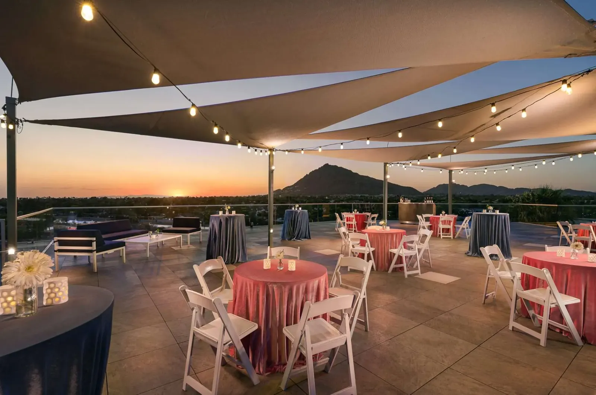
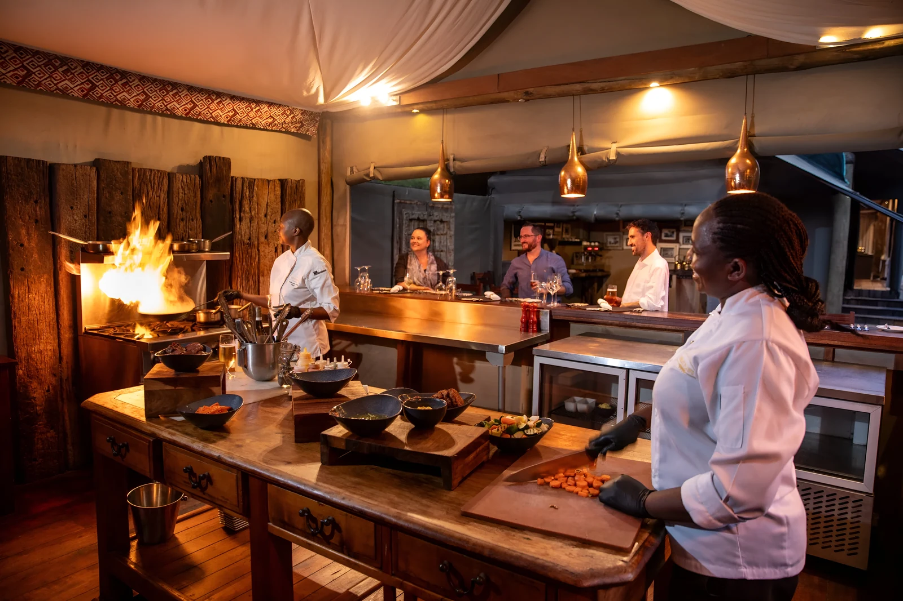
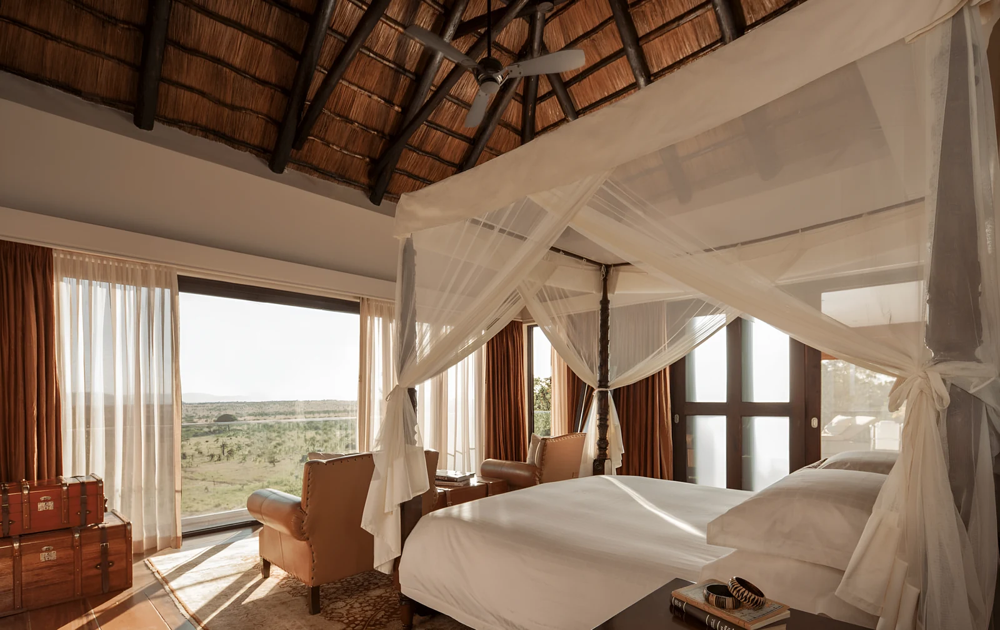
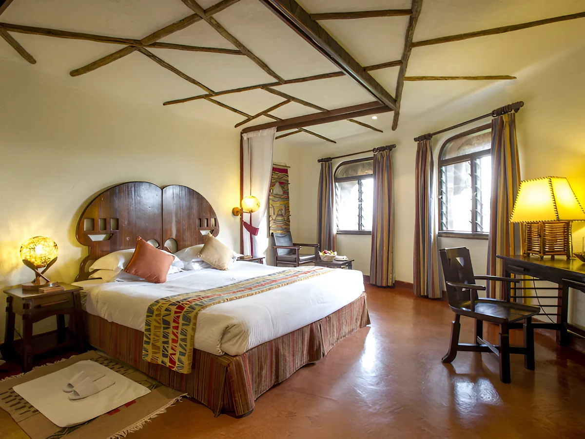
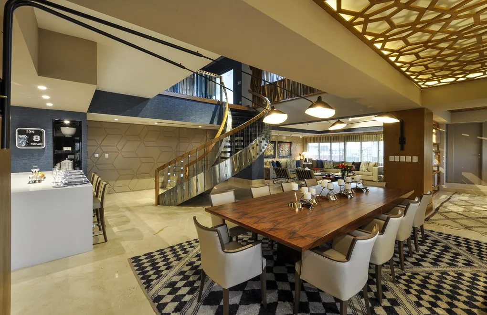

Deluxe
Hearthside Room
Rich amber tones, king bed, and a private terrace with sweeping city views. Handcrafted furniture, Italian linens, and a deep soaking tub.

Welcome to Kenya's premier luxury safari retreat, where refined comfort meets the untamed beauty of the African wildlands.
The Safari Ember Experience
What your stay with us will look like, from first light to last call.

Dining
Start slow under the leafy timber roof: Kenyan coffee grown on the slopes of Mount Kenya, warm mandazi, tropical fruit and eggs any way you like them. Breakfast is included with every stay.
Game drive
Kenya's first national park, and one of the few places on earth where lions, rhinos and giraffes roam with a city skyline on the horizon. Your guide collects you from the lodge in an open safari vehicle, and you're back in time for lunch.

Conservation
Climb the raised platform and meet the endangered Rothschild's giraffes at eye level. Hold out a pellet and a long, dark tongue takes it straight from your hand. The centre's breeding work has helped return these giraffes to the wild.

Wellness
Let the dust of the morning drive wash away. Our therapists work with warm stones, shea butter and local botanicals in open-air treatment rooms looking out over the trees. Choose a 60 or 90-minute ritual, or simply take the afternoon slowly.

Rooftop
As the sky turns gold over the Ngong Hills, the rooftop comes alive: string lights overhead, a cocktail in hand, the city settling below. Stay for the moonrise. The bar is open late.

A Culinary Journey
Every meal at Safari Ember is a celebration of Kenya's rich culinary heritage. Crafted with the finest local ingredients, inspired by the continent, and elevated by world-class technique.
On the Menu

Kenyan heritage
Slow-braised beef in a rich, aromatic tomato stew, served alongside hand-rolled ugali and freshly prepared sukuma wiki. A tribute to Kenya's most beloved culinary traditions, elevated with care.

Sharing platter
A generous celebration of the table: flame-kissed skewers, spiced wraps, and golden sliders brought together for those who believe the finest meals are always shared.

Continental
Inspired by the spice routes of North Africa: tender fish with preserved lemon, roasted vegetables, and vibrant accompaniments that carry the warmth and complexity of the continent.
“We cook with fire, memory, and the land itself. Every plate is a love letter to Kenya.”

Where to Rest
Every room at Safari Ember is a sanctuary, designed to dissolve the boundary between the wild and the refined. Between adventure and deep, unhurried rest.
Choose Your Space
Deluxe
Rich amber tones, king bed, and a private terrace with sweeping city views. Handcrafted furniture, Italian linens, and a deep soaking tub.

Junior suite
A split-level sanctuary dressed in velvet and warm oak. Features a freestanding soaking tub, parlour lounge, and private butler service.

Penthouse
Our crown jewel. Panoramic floor-to-ceiling views, a dedicated private butler, bespoke in-room dining, and a rooftop terrace for exclusive use.
“Tell me what you’re planning, and I’ll take care of the rest.”